Wat kan het?
Lampjes boven alle apps
Een geanimeerd lichtsnoer volgt de rand en de hoeken van je scherm. Tikken gaan gewoon door naar de app eronder.
5 effecten
Vast, fonkelen, om en om knipperen, lopend licht en kleurgolf — in 5 kleurenschema's.
Bouw je eigen boom
Tik om lampjes te hangen, tik op een lampje voor een andere kleur, houd ingedrukt om te verwijderen.
19 bomen + je eigen foto
Van klassiek tot neon, van cartoon-3D tot 5 echte kerstbomen op foto. Elke boom bewaart zijn eigen versiering.
12 haarden
7 getekende haarden met echt deeltjesvuur en 5 met foto's van een knapperend haardvuur. Tik op het vuur en het laait op.
9 interactieve scènes
Sneeuwbol, adventskalender, adventskrans, kerstdorp met trein, slee, sneeuwpop, ijsbaan, kerststal en cadeautjes met je eigen berichtjes.
Als achtergrond
Zet je boom of haard als live wallpaper op je thuisscherm.
🎄 Bomen
19 bomen om tussen te swipen, elk met zijn eigen versiering: van klassiek en dennenboom tot neon, ijs en cartoon-3D, en sinds kort ook echte kerstbomen.
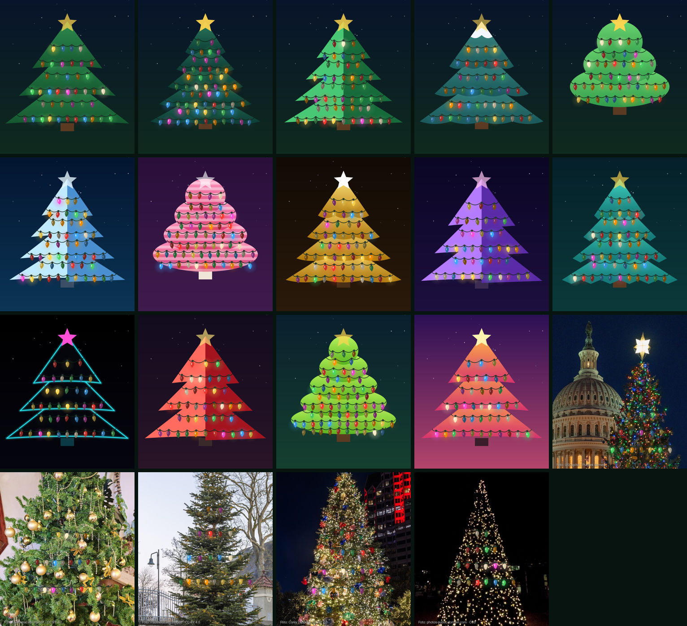
🌲 Echte kerstbomen
Vijf foto's van echte kerstbomen, met jouw lampjes en snoer er gewoon bovenop. Tik om een lampje te hangen, net als bij de getekende bomen. De foto's komen van Wikimedia Commons; de bronnen staan onderaan.
Capitool
USCapitol · publiek domein
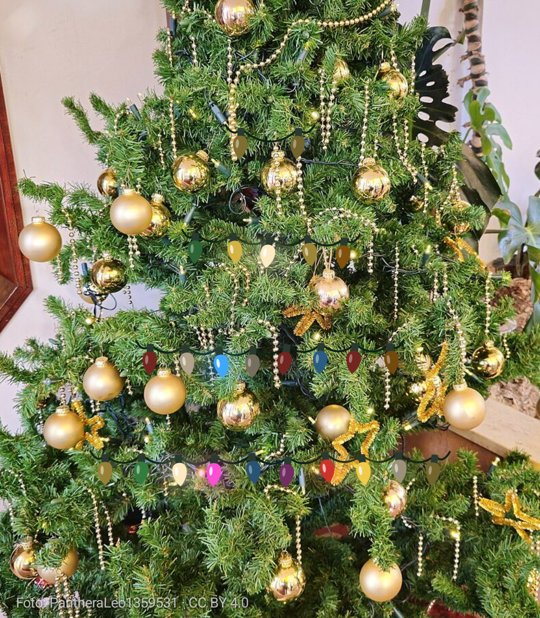
Binnenboom
PantheraLeo1359531 · CC BY 4.0
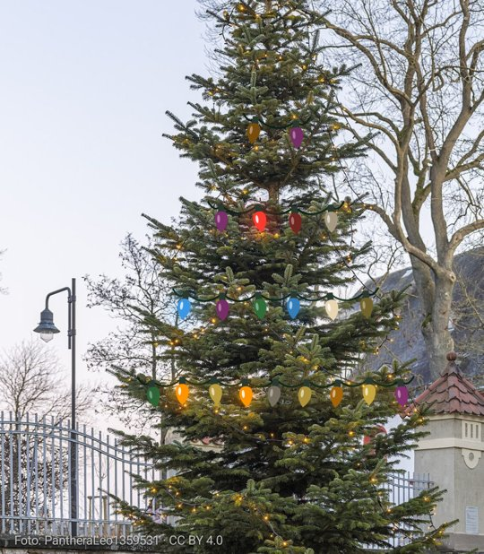
Spar in het park
PantheraLeo1359531 · CC BY 4.0
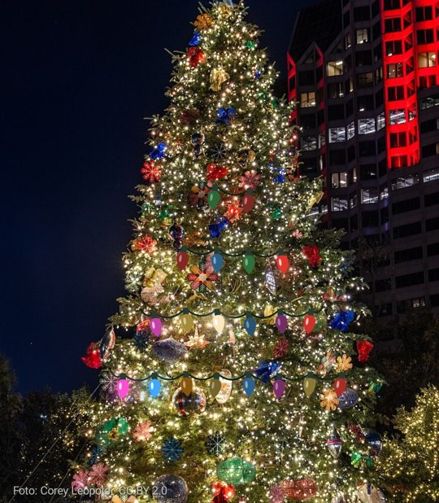
Stadsboom
Corey Leopold · CC BY 2.0
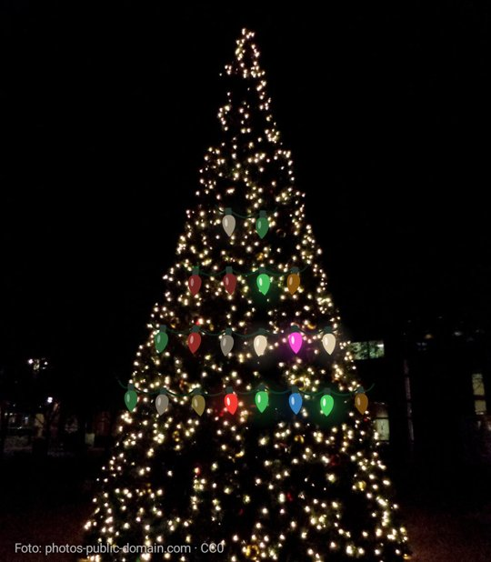
Lichtjesboom
photos-public-domain.com · CC0
🔥 Haarden
Echt vuur, gemaakt van honderden gloeiende deeltjes. Tik op het vuur en het laait op. Langs de mantel of tussen de palen hangt je eigen lichtsnoer.
Cartoon haard
Echt vuur
Steenhaard 3D
Houtkachel
Kampvuur
Blauw vuur
Moderne haard
Kies een boom of haard in de app en zet hem als live wallpaper: je ziet het vuur elke keer als je naar je thuisscherm gaat.
📷 Haarden met echte foto's
Vier foto's van echte haarden met een knapperend vuur, met jouw lichtsnoer erboven. De foto's komen van Wikimedia Commons en zijn gratis te gebruiken. De bronnen staan onderaan deze pagina.
Houtvuur
Pöllö · CC BY 3.0
Kerstkamer
Lindsey Turner · CC BY 2.0
Stenen haard
Vyacheslav Argenberg · CC BY 4.0
Knetterend vuur
onbekend · publiek domein
✨ Interactieve scènes
Niet alleen kijken: tik, schud en bouw. Elke scène heeft zijn eigen verrassing.
Sneeuwbol
Schud je telefoon of tik: het gaat sneeuwen.
Adventskalender
Elke dag een luikje met een verrassing.
Adventskrans
Steek de kaarsjes aan, zondag voor zondag.
Kerstdorp met trein
Tik op huisjes voor licht en toeter met de trein.
Slee van de kerstman
Tik op de slee: het regent cadeautjes.
Sneeuwpop bouwen
Tik, en hij verschijnt stap voor stap.
IJsbaan
Tik op het ijs voor een nieuwe schaatser.
Kerststal
Tik op de sterrenhemel en doe een wens.
Cadeautjes
Eigen berichtjes die pas op een dag open mogen.
Op sommige dagen gebeurt er iets bijzonders. Kom op een speciale dag nog eens terug. 👀
🎁 Extra's
Naast bomen, haarden en scènes: aftellen tot kerst (bovenin het scherm), geluid (knetterend haardvuur, speeldoos-melodie en belletjes bij een tik, helemaal zelf gesynthetiseerd) en een lampjes-effect "Op de muziek" dat met de microfoon op geluid in de kamer reageert.
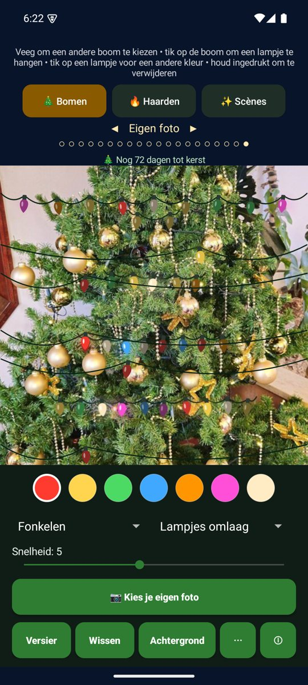
Je eigen foto
Kies een foto van je eigen boom of kamer en hang er lampjes overheen. Ook als wallpaper.
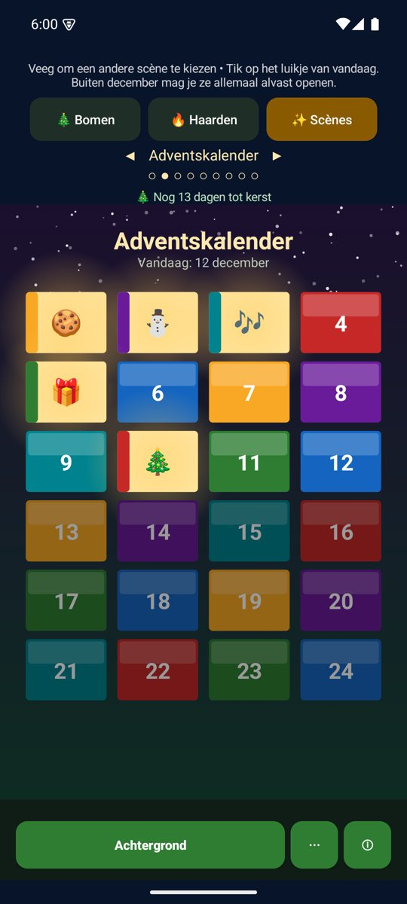
Scène van de dag
In het seizoen (15 nov – 6 jan) opent de app op de scène van vandaag: advent, kerststal, cadeautjes...
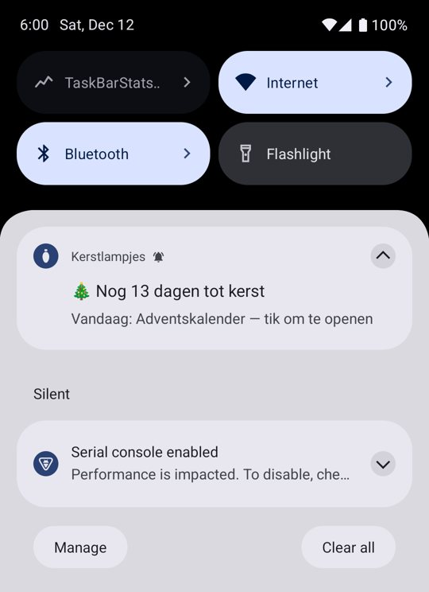
Dagelijkse melding
Elke dag om 18:00 een melding met het aftellen tot kerst en de scène van vandaag. Aan en uit te zetten.
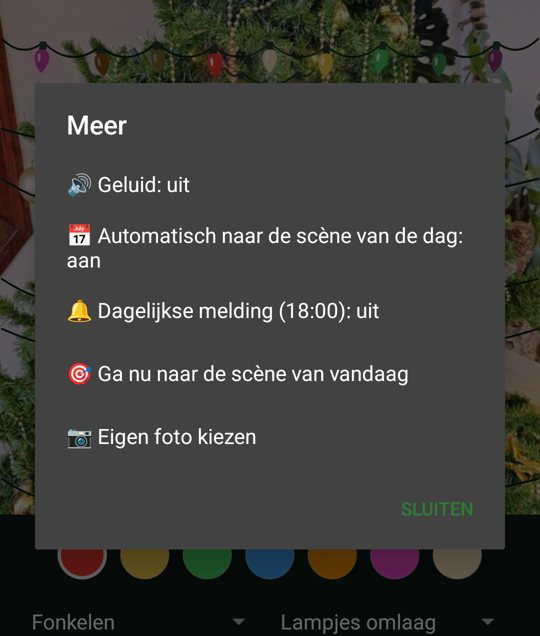
Menu ⋯
Geluid, automatische dagscène, melding en eigen foto bij elkaar.
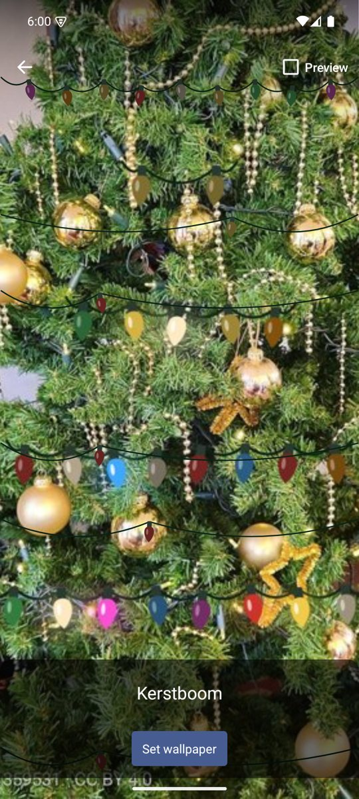
Wallpaper: echte boom
Als live wallpaper met jouw lampjes erop.
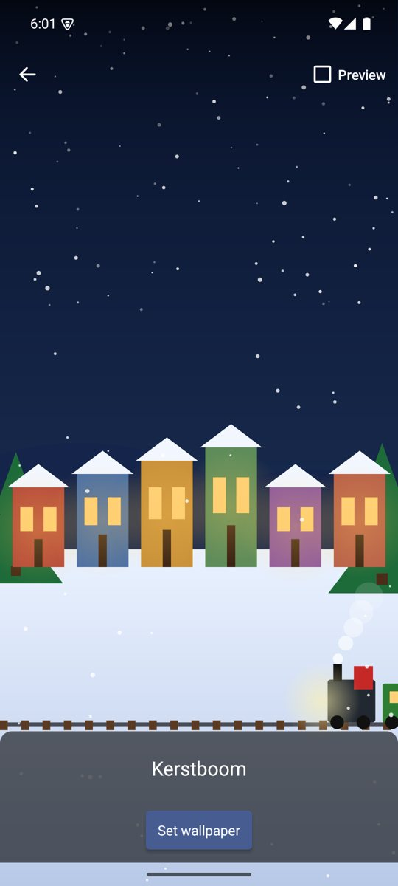
Wallpaper: kerstdorp
Ook de scènes werken als live wallpaper, met rijdende trein en sneeuw.
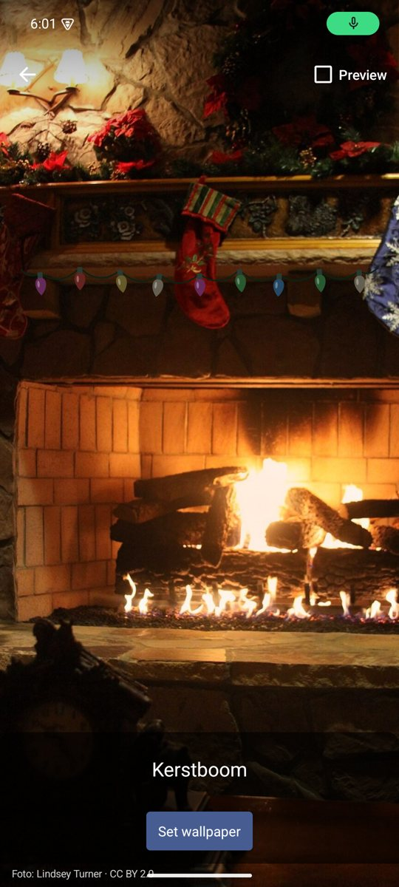
Wallpaper: foto-haard
De foto-haarden met jouw lichtsnoer als wallpaper.
Bronnen
De foto's in de app en op deze pagina komen van Wikimedia Commons (opgehaald op 14 oktober 2026). Ze zijn verkleind en bijgesneden.
- Fire burning in a fireplace.jpg — Pöllö, CC BY 3.0
- Cozy Christmas Fireplace with stockings.jpg — Lindsey Turner, CC BY 2.0
- Fireplace, Wood fire, Rostov-on-Don, Russia.jpg — Vyacheslav Argenberg, CC BY 4.0
- Fireplace Burning.jpg — publiek domein
- 2020 Capitol Christmas Tree with Lights (50676367266).jpg — USCapitol, publiek domein
- Weihnachtsbaum im China Garten 20241225.jpg — PantheraLeo1359531, CC BY 4.0
- Weihnachtsbaum am Lorenzpark 20241130 HOF8432 RAW-Export.jpg — PantheraLeo1359531, CC BY 4.0
- Christmas Tree in the Park - Flickr - Corey Leopold.jpg — Corey Leopold, CC BY 2.0
- White Christmas Tree Lights at Night.jpg — photos-public-domain.com, CC0


.jpg){kind=link}